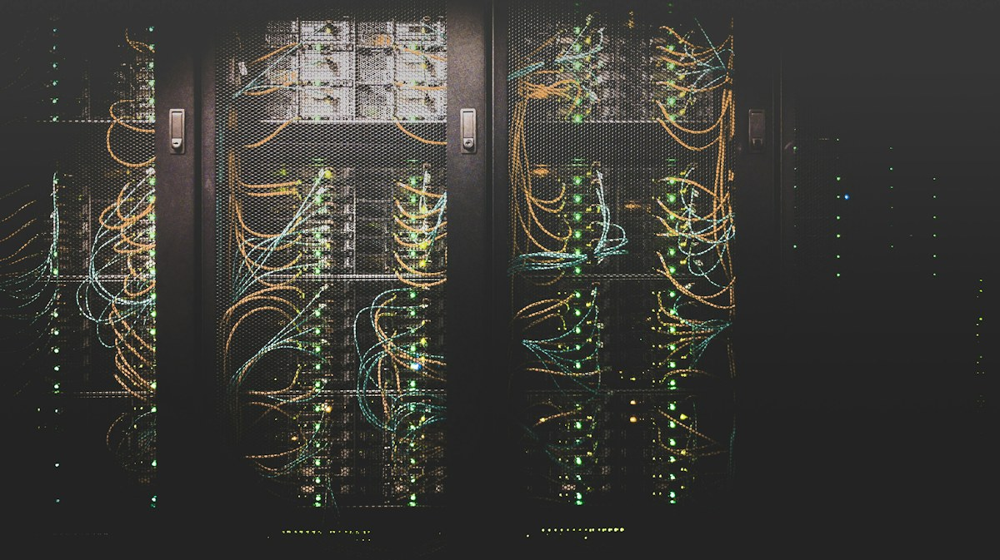

SW / 01IN
USE
Kali Linux
A Linux environment for learning and practicing security workflows.
OPERATING SYSTEMCYBERSECURITY STUDENT VENITE UNIVERSITY
Hello, I'm Favour.
I’m building practical skills in network security, ethical testing, and vulnerability assessment, one lab at a time.

I’m a cybersecurity undergraduate at Venite University, interested in the practical work of understanding systems and making them more secure.
My learning so far has included hands-on time with Kali Linux, Nmap, Wireshark, GoPhish, and Python, alongside an internship at Kinplus Technology.
A little more about my journeyTHE WORKBENCH
Tools are only as useful as the care and permission behind them. I use security tools in learning environments and authorized labs.
A Linux environment for learning and practicing security workflows.
OPERATING SYSTEMNetwork discovery and service enumeration in controlled lab environments.
NETWORK SCANNERInspecting network traffic to understand protocols and spot unusual behavior.
PACKET ANALYSISLearning how ethical phishing simulations can strengthen awareness.
AWARENESS TRAININGBuilding a foundation in scripting and small security-focused automations.
PROGRAMMINGA web security testing toolkit to explore with intentionally vulnerable labs.
WEB SECURITYAn open-source web app scanner for authorized training targets.
WEB SECURITYA compact computer for building an isolated home security lab.
LAB COMPUTERHardware-backed multi-factor authentication for stronger account security.
YUBIKEY / FIDO2A monitor-mode capable adapter for controlled wireless lab exercises.
WIRELESS LABA portable device for learning about radio protocols with equipment you own or are authorized to test.
RF / NFC LEARNINGHardware shown as areas of interest, not a claim of ownership. Always test only with explicit permission.
From the hardware at the edge to the infrastructure carrying our data, security touches every layer.

Additional photography via Unsplash.
Small, scoped exercises that turn curiosity into repeatable skills.
A Python tool concept for organizing authorized Nmap scans of virtual lab hosts and summarizing exposed services.
Using Nmap in controlled environments to map services, understand scan results, and document findings clearly.
Building familiarity with traffic analysis and ethical phishing simulations to support better security awareness.
THE LEARNING PATH
Kinplus Technology
Gained practical exposure to Kali Linux, Nmap scanning, GoPhish simulations, and Wireshark traffic analysis.
Venite University
Developing a foundation in cybersecurity, network defense, and security tools.
LET'S CONNECT
Interested in cybersecurity, learning opportunities, or sharing ideas? Send me a note.
megafavourtimi@gmail.com